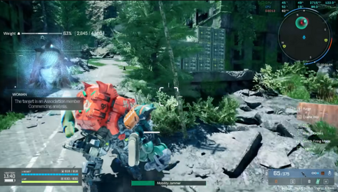
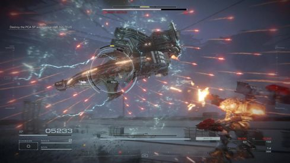

2024-04-24
I'm not one who was ever all that into mecha games and anime. It always looked cool but for some reason seemed to be very impenetrable to me. I looked at things like Armored Core and Mech Warrior with a passing interest, although I have seen a few anime heavily incorperating the theme, most notably Evangelion. However, I just stumbled upon a new mech game out of nowhere that really caught my interest. Before I even name it though, I will say I was quickly dissapointed with the monitization strats I saw on display, and the flagrant disregard for gameplay polish only further intensified my now growing distaste for it. It's a shame too, because the core concept, and art design, looks very promising. The game I am talking about is SYNDUALITY Echo of Ada. Now the video I stumbled upon was [this one] here by a guy who goes by the name of Myndrr. It shows off some basic gameplay from the just recently passed closed-beta test held by publisher Bandai Namco, as well as Myndrr's impressions of the gameplay and performance. Seeing this gave me a sudden interest in the genera I've never quite had before. At most my interest stopped at watching some game reviews about Mech Warrior online by someone like Mandaloregaming, or watching the occasional anime that happend to have mechs as a core theme, like mentioned before.
At this point im sifting through all the mecha content I can find. I don't know what about it felt so impenetrable, but now im completly interested. I love watching giant ass robots beat the piss out of one and other, and firing irresponsibily large guns and cannons. For the moment I'm watching Asmongold's Armored Core 6 playthrough and it really makes me want to buy the game, but I think I'll hold off for now. What this makes me want most though is to build some sort of game demo. Maybe a clone of SYNDUALITY but with a player controller that doesn't feel like shit, and with performance that isn't capped at 62 fps. Maybe that will be one of the projects I put up here on this site. Who knows!
